C8051F Development Environment Guide
[Note] Some pictures are take from internet. Please notify me to remove it if have any copyright issue.
1. Introduction
This article will describe the installation and usage of the C8051F microcontroller development environment.
2. Required HW/SW Package List
2.1 HW List
- CJMCU-5132
https://item.taobao.com/item.htm?spm=a1z10.3-c.w4002-2963753174.9.675936c32Nw8Q6&id=545998608808
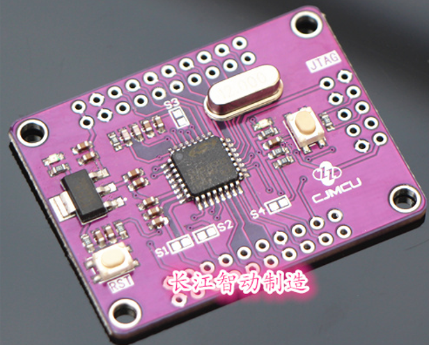
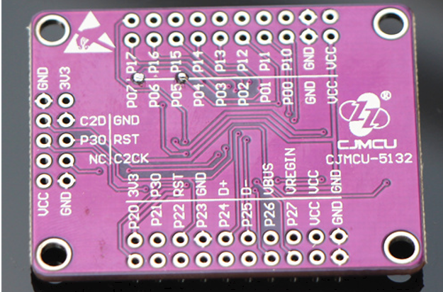
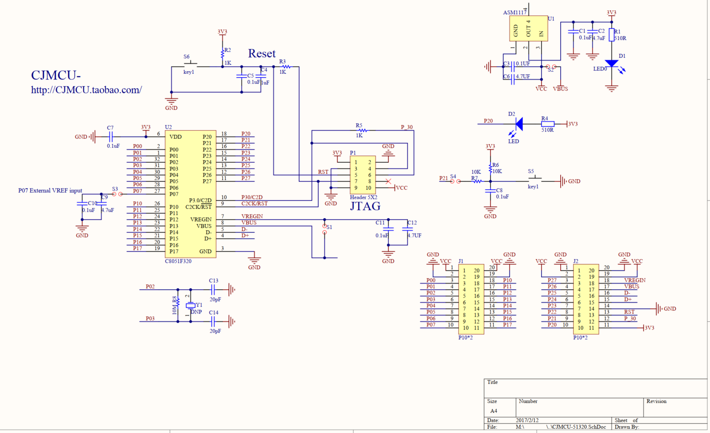
- USB Debug Adapter
2.2 SW List
| Name | Version | Download Link |
|---|---|---|
| Keil for C51 | c51v960a.exe | https://www.keil.com/demo/eval/c51.htm |
| Debug Driver for Keil µVision Software | SiC8051F_uVision_v4.40.exe | https://www.silabs.com/documents/login/software/SiC8051F_uVision.exe |
3. Installation Steps
- First install c51v960a.exe
- Then install SiC8051F_uVision_v4.40.exe to the folder(which should contains TOOLS.INI file) same as c51v960a.exe
4. Create Keil Project for C8051F320 board and Setup Debugger Options
- Create New Project
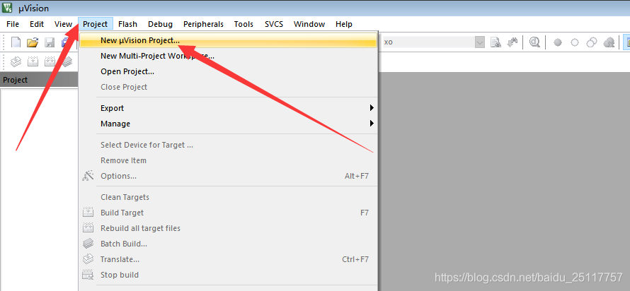
- Select correct chip type
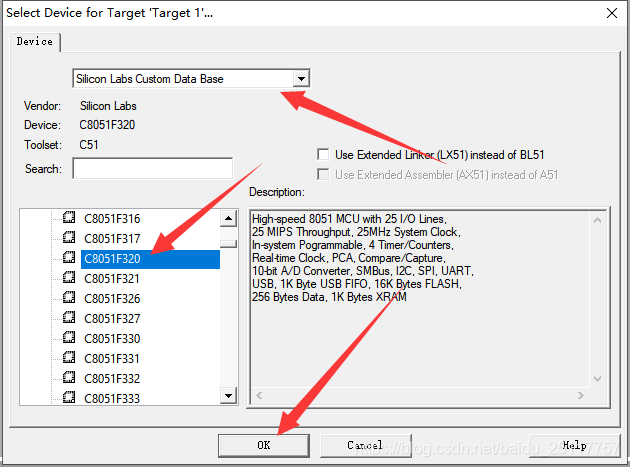
- Configure Debugger and output options for Target
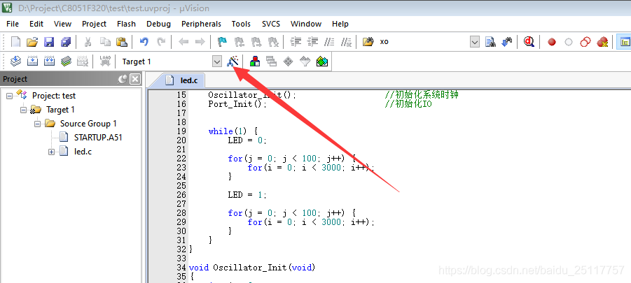
- Configure output file format - Create HEX File
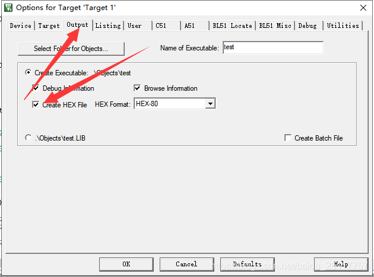
- Configure debug driver
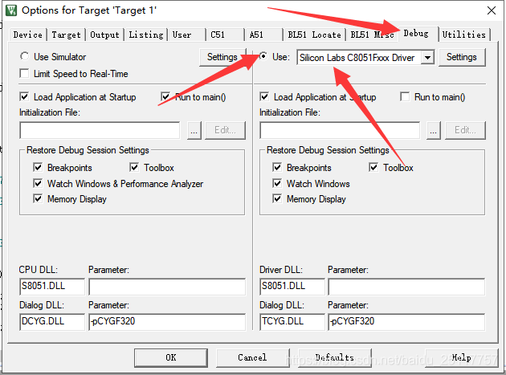
- Configure debug Driver Setting
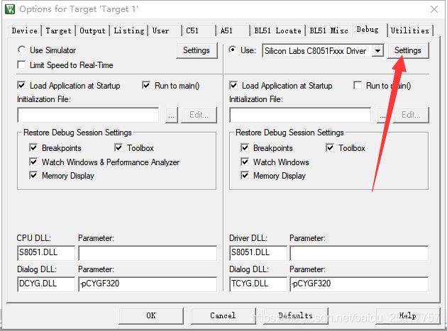
- Configure debug Driver Setting for Adapter
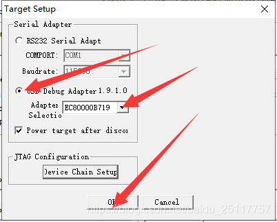
- Add led.c file to project
#include <C8051F320.h>
#define SYSCLK 12000000 //时钟频率
sbit LED = P2 ^ 0; //LED
void Oscillator_Init(void);
void Port_Init(void);
void main(void)
{
int i, j;
PCA0MD &= ~0x40; //关闭看门狗
Oscillator_Init(); //初始化系统时钟
Port_Init(); //初始化IO
while(1) {
LED = 0;
for(j = 0; j < 100; j++) {
for(i = 0; i < 3000; i++);
}
LED = 1;
for(j = 0; j < 100; j++) {
for(i = 0; i < 3000; i++);
}
}
}
void Oscillator_Init(void)
{
int i = 0;
OSCXCN = 0x67; //外部晶振，10MHz < f≤ 30MHz
for(i = 0; i < 3000; i++); //等待初始化，等待至少 1ms
while((OSCXCN & 0x80) == 0); //等待晶体振荡器正在运行并且工作稳定
OSCICN = 0x83; //内部振荡器使能，SYSCLK 为内部振荡器输出（不分频）
}
void Port_Init(void)
{
XBR0 = 0x08;
XBR1 = 0x40;
P2MDOUT = 0x01; //led推挽输出
}
- Build and debug
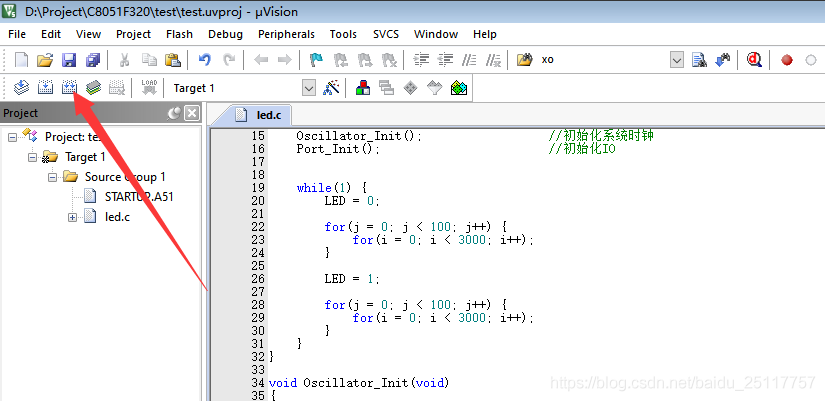
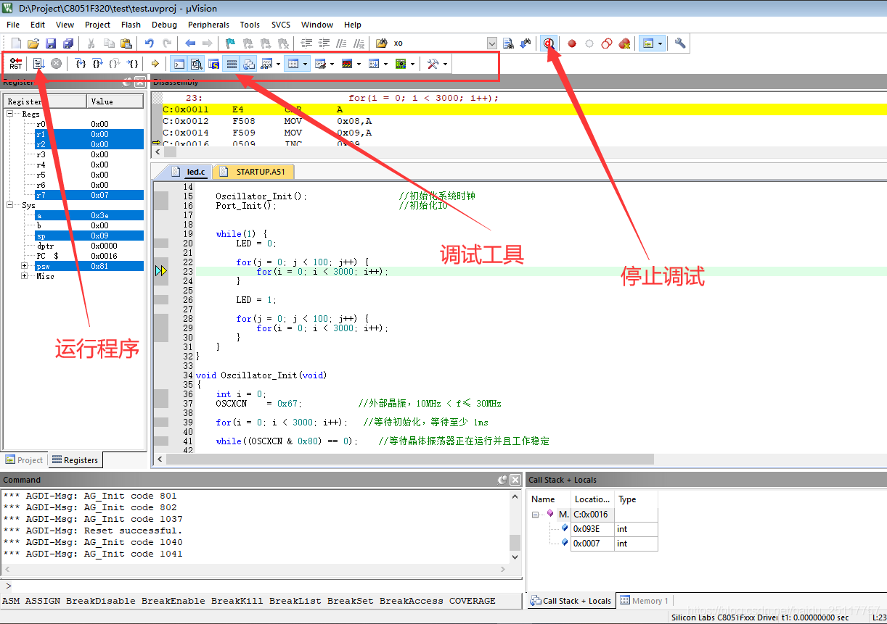
- Done